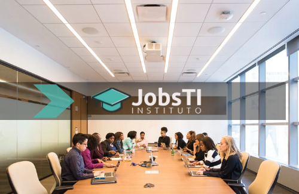
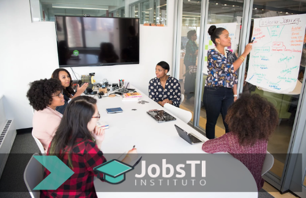

Sobre Nós
Instituição
O Instituto Jobs iniciou suas atividades em 2001, como NEAD (Núcleo de Educação a Distância) com o objetivo de promover o uso das tecnologias de informação e de comunicação no Ensino Superior, estimulando, assim, a pesquisa e o desenvolvimento neste segmento no Instituto Federal do Pará. A atuação do NEAD ocorreu até 2005. Em 2006 e 2007, com o início da implantação da semipresencialidade na Universidade Cruzeiro do Sul, o uso das tecnologias de informação e de comunicação no Ensino Superior tornou-se cada vez mais frequente.
Ampliação

Em 2008, o Instituto propôs uma mudança na concepção da semipresencialidade em seus cursos presenciais de graduação, saindo de um modelo de uso de 20% das atividades on-line em todas as disciplinas para disciplinas totalmente a distância compartilhadas entre os cursos da Instituição e entre as Instituições pertencentes à Cruzeiro do Sul Educacional. Esta nova concepção foi implantada em 2009. Ainda em 2008, o Instituto obteve o Credenciamento Institucional para a oferta de cursos de pós-graduação na modalidade a distância (Portaria MEC No. 938 de agosto de 2008).
MEC

Em 2012, o Instituto foi credenciada para oferta de cursos de graduação na modalidade a distância por meio da Portaria MEC No. 1281, D.O.U de 22.10.2012. Ainda, em 2012, a Universidade Cidade de São Paulo, credenciada para oferta de cursos na modalidade a distância desde de 2007, pela Portaria MEC No. 16, D.O.U de 04.01.2007, passou a integrar a Cruzeiro do Sul Educacional. Já em 2013, foi incorporada a Universidade de Franca – UNIFRAN, credenciada para oferta de cursos na modalidade a distância desde 2006, pela conforme Portaria MEC 1691, D.O.U de 16.10.2006. Em 2018, o Centro Universitário da Serra Gaúcha – FSG, passou a ser uma das certificadoras da instituição, credenciada em 2016 pela Portaria MEC No. 936, DOU de 19/08/2016. Já em 2019, foi credenciado, provisoriamente, pela Portaria Ministerial nº 1.010, de 20/05/2019, DOU nº 96 de 21/05/2019, seção 1, p. 37-38, o Centro Universitário de João Pessoa - UNIPÊ. O Centro Universitário Braz Cubas foi credenciado seguindo a Portaria Ministerial nº 1.771, de 01.11.2006, DOU nº 211, de 03.11.2006, seção 1, p. 15 e recredenciado pela Portaria Ministerial nº 1.067, de 18.10.2018, DOU nº 202, de 19.10.2018, seção 1, p. 16-17.